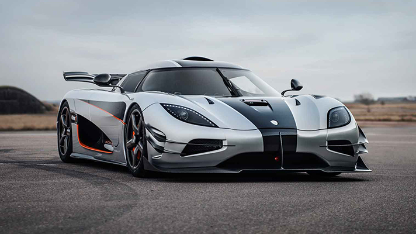
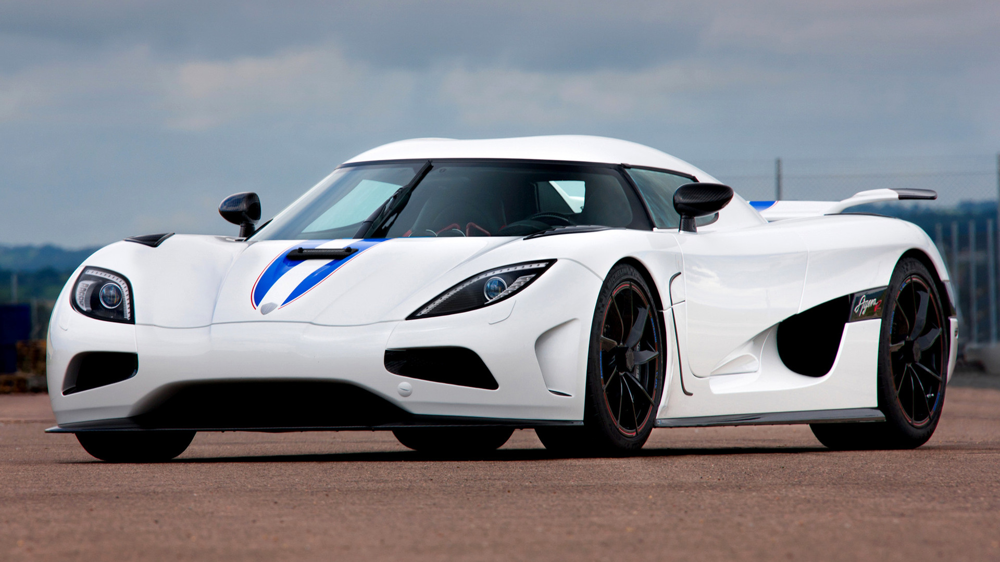
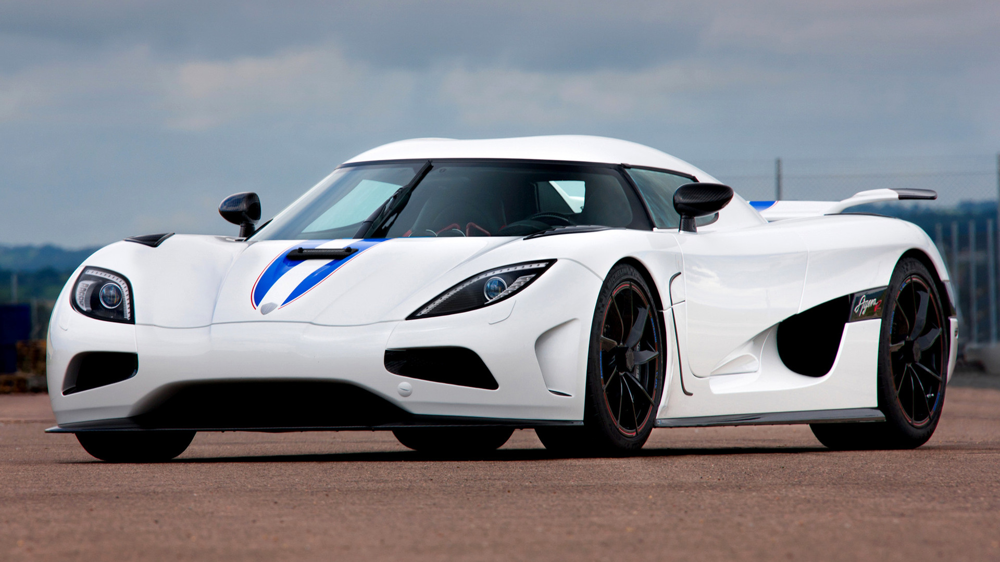

Koenigsegg
 


Koenigsegg is an art of luxury. These vehicles are rare to see. A few Koenigsegg vehicles include the “One:1” model, Agera, Regera, Jesko etc. These models stated they are trendy amongst the car community, mainly for their beauty and performance. Koenigsegg started in August 94’. This man was founded by Christian von Koenigsegg, passionate about creating the “ultimate” vehicle. Eventually, through the work of his first car, the “CC,” Koenigsegg became more known throughout the world, leading to making cars like the Agera, which has broken the record of 400km/h.